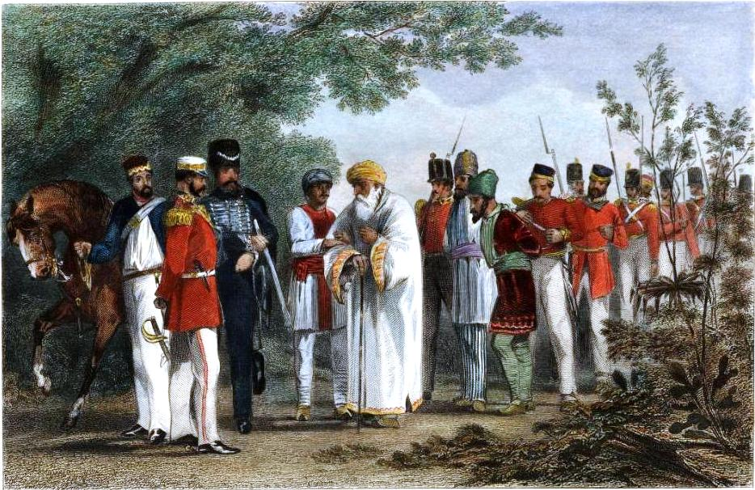
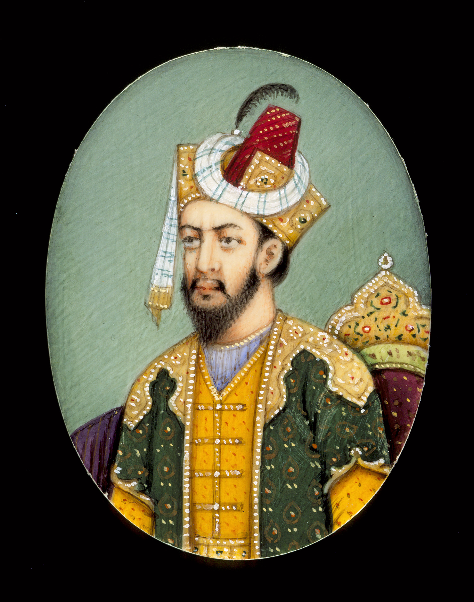
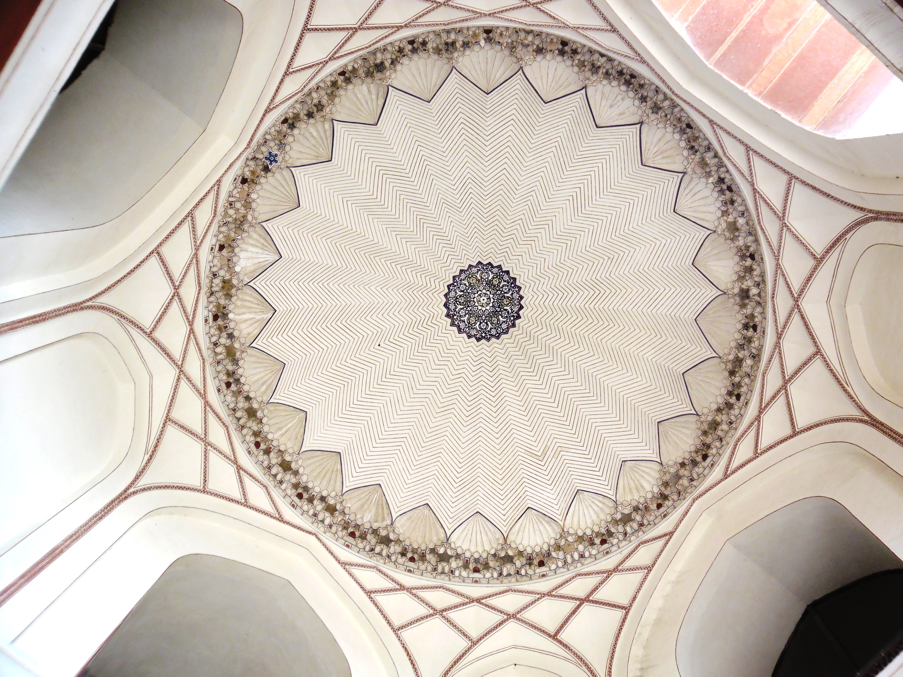

Humayun's tomb (Hindustani: Maqbara-i Humayun) is the tomb of the Mughal Emperor Humayun in Delhi, India. The tomb was commissioned by Humayun's chief consort, Empress Bega Begum (also known as Haji Begum), on patronage of her step-son Akbar,[1][2][3][4][5][6][7] in 1558, and designed by Mirak Mirza Ghiyas and his son, Sayyid Muhammad,[8] Persian architects chosen by her.[9][10] It was the first garden-tomb on the Indian subcontinent,[11] and is located in Nizamuddin East, Delhi, India, close to the Dina-panah Citadel, also known as Purana Qila (Old Fort), that Humayun found in 1533. It was also the first structure to use red sandstone at such a scale.[12][13] The tomb was declared a UNESCO World Heritage Site in 1993,[11] and since then has undergone extensive restoration work, which is complete.[14] Besides the main tomb enclosure of Humayun, several smaller monuments dot the pathway leading up to it, from the main entrance in the West, including one that even pre-dates the main tomb itself, by twenty years; it is the tomb complex of Isa Khan Niyazi, an Afghan noble in Sher Shah Suri's court of the Suri dynasty, who fought against the Mughals, constructed in 1547 CE.
The complex encompasses the main tomb of the Emperor Humayun, which houses the graves of Empress Bega Begum, Hamida Begum, and also Dara Shikoh, great-great-grandson of Humayun and son of the later Emperor Shah Jahan, as well as numerous other subsequent Mughals, including Emperor Jahandar Shah, Farrukhsiyar, Rafi Ul-Darjat, Rafi Ud-Daulat, Muhammad Kam Bakhsh and Alamgir II.[15][16] It represented a leap in Mughal architecture, and together with its accomplished Charbagh garden, typical of Persian gardens, but never seen before in India, it set a precedent for subsequent Mughal architecture. It is seen as a clear departure from the fairly modest mausoleum of his father, the first Mughal Emperor, Babur, called Bagh-e Babur (Gardens of Babur) in Kabul (Afghanistan). Though the latter was the first Emperor to start the tradition of being buried in a paradise garden.[17][18] Modelled on Gur-e Amir, the tomb of his ancestor and Asia's conqueror Timur in Samarkand, it created a precedent for future Mughal architecture of royal mausolea, which reached its zenith with the Taj Mahal, at Agra.[19][20][21]
The site was chosen on the banks of Yamuna river, due to its proximity to Nizamuddin Dargah, the mausoleum of the celebrated Sufi saint of Delhi, Nizamuddin Auliya, who was much revered by the rulers of Delhi, and whose residence, Chilla Nizamuddin Auliya lies just north-east of the tomb. In later Mughal history, the last Mughal Emperor, Bahadur Shah Zafar took refuge here, during the Indian Rebellion of 1857, along with three princes, and was captured by Captain Hodson before being exiled to Rangoon.[10][22] At the time of the Slave Dynasty this land was under the 'KiloKheri Fort' which was capital of Sultan Qaiqabad, son of Nasiruddin (1268–1287).
The Tombs of Battashewala Complex lie in the buffer zone of the World Heritage Site of the Humayun Tomb Complex; the two complexes are separated by a small road but enclosed within their own separate compound wall.[23]
History

Capture of the last Mughal emperor Bahadur Shah Zafar and his sons by William Hodson at Humayun's tomb in September 1857<
After his death on 27 January 1556, Humayun's body was first buried in his palace in Purana Quila at Delhi. Thereafter it was taken to Sirhind, in Punjab by Khanjar Beg and, in 1558, it was seen by Humayun's son, the then Mughal Emperor, Akbar. Akbar subsequently visited the tomb in 1571, when it was about to be completed.[24][25][26]
The tomb of Humayun was built by the orders of his first wife and chief consort, Empress Bega Begum (also known as Haji Begum). Construction began in 1565 and was completed in 1572; it cost 1.5 million rupees,[10] paid entirely by the Empress.[27] Bega Begum had been so grieved over her husband's death that she had thenceforth dedicated her life to a sole purpose: the construction of a memorial to him than would be the most magnificent mausoleum in the Empire, at a site near the Yamuna River in Delhi.[28] According to Ain-i-Akbari, a 16th-century detailed document written during the reign of Akbar, Bega Begum supervised the construction of the tomb after returning from Mecca and undertaking the Hajj pilgrimage.[29]
According to Abd al-Qadir Bada'uni, one of the few contemporary historians to mention construction of the tomb, it was designed by the Persian architect Mirak Mirza Ghiyas (also referred to as Mirak Ghiyathuddin), who was selected by the Empress and brought from Herat (northwest Afghanistan); he had previously designed several buildings in Herat, Bukhara (now Uzbekistan), and others elsewhere in India.[9] Ghiyas died before the structure was completed and it was completed by his son, Sayyed Muhammad ibn Mirak Ghiyathuddin.[24][25]
An English merchant, William Finch, who visited the tomb in 1611, describes rich interior furnishing of the central chamber (in comparison to the sparse look today). He mentions the presence of rich carpets, as well as a shamiana, a small tent above the cenotaph, which was covered with a pure white sheet, and with copies of the Quran in front along with Humayun's sword, turban and shoes.[26]
The fortunes of the once famous Charbagh (Four-gardens) made of four squares separated by four promenades, radiating from a central reflection pool. It spread over 13 hectares surrounding the monument, changed repeatedly over the years after its construction. The capital had already shifted to Agra in 1556, and the decline of the Mughals accelerated the decay of the monument and its features, as the expensive upkeep of the garden proved impossible. By the early 18th century, the once lush gardens were replaced by vegetable garden of people who had settled within the walled area. However, the capture of the last Mughal emperor, Bahadur Shah Zafar during the Indian Rebellion of 1857 together with the premises, and his subsequent sentencing to exile, along with execution of his three sons, meant that the monument's worst days lay ahead, as the British took over Delhi completely. In 1860, the Mughal design of the garden was replanted to a more English garden-style, with circular beds replacing the fours central water pools on the axial pathways and trees profusely planted in flowerbeds. This fault was corrected in the early 20th century, when on Viceroy Lord Curzon's orders the original gardens were restored in a major restoration project between 1903 and 1909, which also included lining the plaster channels with sandstone; a 1915 planting scheme added emphasis to the central and diagonal axis by lining it with trees, though some trees were also planted on the platform originally reserved for tents.[17]

Mughal Emperor, Humayun r. 1508–1556
In 1882, the official curator of ancient monuments in India published his first report, which mentioned that the main garden was let out to various cultivators; amongst them till late were the royal descendants, who grew cabbage and tobacco in it.[30]
in Ronaldshay's biography of Lord Curzon a letter is quoted from Lord Curzon to his wife in April 1905: "You remember Humayun's tomb? I had the garden restored, the water channels dug out and refilled and the whole place restored to its pristine beauty. I went to England last summer and, the eye of the master being away, the whole place has been allowed to revert. The garden has been let to a native and is now planted with turnips and the work of four years is thrown away! I shall drive out there, and woe betide the deputy commissioner whose apathy has been responsible."
During the Partition of India, in August 1947 the Purana Qila together with Humayun's Tomb, became major refugee camps for Muslims migrating to the newly founded Pakistan, and was later managed by the government of India. These camps stayed open for about five years, and caused considerable damage not only to the extensive gardens, but also to the water channels and the principal structures. The camps were raided many times by jathas which caused vandalism to occur during the early partition days in 1947. Eventually, to avoid vandalism, the cenotaphs within the mausoleum were encased in brick. In the coming years, the Archaeological Survey of India (ASI) took on responsibility for the preservation of heritage monuments in India, and gradually the building and its gardens were restored. Until 1985, four unsuccessful attempts were made to reinstate the original water features.[17][31]
An important phase in the restoration of the complex began around 1993, when the monument was declared a World Heritage Site. This brought new interest to its restoration, and a detailed research and excavation process began under the aegis of the Aga Khan Trust and the ASI. This culminated in 2003, when much of the complex and gardens were restored, with the historic fountains running once again after several centuries of disuse. The restoration has been a continuous process ever since, with subsequent phases addressing various aspects and monuments of the complex.[17]
Architecture

Floor plan of tomb structure of Humayun's Tomb
Turkic and Mughal rule in the Indian subcontinent also introduced Central Asian and Persian styles of Islamic architecture in the region, and by the late 12th century early monuments in this style were appearing in and around Delhi, the capital of Delhi Sultanate. Starting with the Turkic Slave dynasty which built the Qutb Minar (1192) and its adjacent Quwwat-ul-Islam mosque (1193 CE). North India was successively ruled by foreign dynasties in the coming centuries, giving rise to the Indo-Islamic architecture. While the prevailing style of architecture was trabeate, employing pillars, beams and lintels, this brought in the arcuate style of construction, with its arches and beams, which flourished under Mughal patronage and by incorporating elements of Indian architecture, especially Rajasthani architecture including decorative corbel brackets, balconies, pendentive decorations and indeed kiosks or chhatris, to develop a distinct Mughal architecture style, which was to become a lasting legacy of the Mughal rule.[32] The combination of red sandstone and white marble was previously seen in Delhi Sultanate period tombs and mosques, most distinctively in the highly decorative Alai Darwaza gatehouse in the Qutub complex, Mehrauli, built in 1311, under the Khalji dynasty.[33]
Humayun's cenotaph
Humayun's Tomb Garden Enclosure Plan
The high rubble built enclosure is entered through two lofty double-storeyed gateways on the west and south, 16 metres high with rooms on either side of the passage and small courtyards on the upper floors. The tomb, built of rubble masonry and red sandstone, uses white marble as a cladding material and also for the flooring, lattice screens (jaalis), door frames, eaves (chhajja), and the main dome. It stands on a vaulted terrace eight metres high and spread over 12,000m2. It is essentially square in design, though chamfered on the edges to appear octagonal, to prepare ground for the design of the interior structure. The plinth made with rubble core has fifty-six cells all around and houses over 100 gravestones. The entire base structure is on a raised platform, a few steps high.[24]
Inspired by Persian architecture; the tomb reaches a height of 47 metres (154 ft) and the plinth is 91 metres (299 ft) wide, and was the first Indian building to use the Persian double dome on a high neck drum, and measures 42.5 metres (139 ft), and is topped by 6 metres (20 ft) high brass finial ending in a crescent, common in Timurid tombs. The double or 'double-layered' dome, has an outer layer that supports the white marble exterior, while the inner part gives shape to the cavernous interior volume. In a contrast to the pure white exterior dome, the rest of the building is made up of red sandstone, with white and black marble and yellow sandstone detailing, to relieve the monotony.[34]
The symmetrical and simple design on the exterior is in sharp contrast with the complex interior floor plan, of the inner chambers, which is a square ninefold plan, where eight two-storied vaulted chambers radiate from the central, double-height domed chamber. It can be entered through an imposing entrance iwan (high arc) on the south, which is slightly recessed, while other sides are covered with intricate jaalis, stone latticework. Underneath this white dome in a domed chamber (hujra), lies the central octagonal sepulcher, the burial chamber containing a single cenotaph, that of the second Mughal Emperor, Humayun. The cenotaph is aligned on the north-south axis, as per Islamic tradition, wherein the head is placed to the north, while the face is turned sideways towards Mecca. The real burial chamber of the Emperor, however, lies in an underground chamber, exactly beneath the upper cenotaph, accessible through a separate passage outside the main structure, which remains mostly closed to visiting public. This burial technique along with pietra dura, a marble and even stone inlay ornamentation in numerous geometrical and arabesque patterns, seen all around the facade is an important legacy of Indo-Islamic architecture, and flourished in many later mausolea of the Mughal Empire, like the Taj Mahal, which also features twin cenotaphs and exquisite pietra dura craftsmanship.[32]
The main chamber also carries the symbolic element, a mihrab design over the central marble lattice or jaali, facing Mecca in the West. Instead of the traditional Surah 24, An-Noor of Quran being inscribed on the mihrabs, this one is just an outline allowing light to enter directly into the chamber, from Qibla or the direction of Mecca, thus elevating the status of the Emperor above his rivals and closer to divinity.[24]
This chamber with its high ceiling is encompassed by four main octagonal chambers on two floors, set at the diagonals with arched lobbies leading to them also connecting them. There are four auxiliary chambers in between, suggesting that the tomb was built as a dynastic mausoleum. Collectively the concept of eight side chambers not only offers passage for circumambulation of the main cenotaph, a practice common in Sufism and also visible in many Mughal imperial mausoleums, it also reflects the concept of Paradise in Islamic cosmology. Each of the main chambers has, in turn, eight more, smaller chambers radiating from them, and thus the symmetrical ground plan reveals itself to contain 124 vaulted chambers in all. Many smaller chambers too, contain cenotaphs of other members of the Mughal royal family and nobility, all within main walls of the tomb. Prominent among them cenotaphs of Hamida Begum herself are there alongside Dara Shikoh. In all there are over 100 graves within the entire complex, including many on the first level terrace, earning it the name "Dormitory of the Mughals". Since the graves are not inscribed their identification remains uncertain.[15][25]
The building was the first to use its unique combination of red sandstone and white marble, and includes several elements of Indian architecture, like the small canopies or chhatris surrounding the central dome, popular in Rajasthani architecture and which were originally covered with blue tiles.[15][25][35]
Gallary
this This chamber with its high ceiling is encompassed by four main octagonal chambers on two floors, set at the diagonals with
Floor plan of tomb structure of Humayun's TombFloor plan of tomb structure of Humayun's TombFloor plan of tomb structure of Humayun's TombFloor plan of tomb structure of Humayun's Tomb
 History
Architecture
Gallary
History
Architecture
Gallary